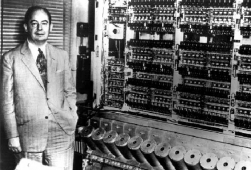

A Neumann-elveket Neumann János 1946-ban dolgozta ki a számítógépek ideális működéséhez. Ezek szerint a gépnek öt alapvető
funkcionális
egységből kell állnia: bemeneti egység,memória, aritmetikai egység, vezérlőegység, kimeneti egység. A számítógépek
az elmúlt évtizedekben páratlan
fejlődésen mentek keresztül, de elvi felépítésük nem változott.
Neumann elvek
- A gép az egyes utasításokat egymás után, egyenként hajtja végre
- A kettes számrendszert és a rajta értelmezett aritmetikai ill. logikai mű könnyű megvalósítani kétállapotú áramkörökkel  (pl.: 1- magasabb feszültség, 0 - alacsonyabb feszültség)
- A számítógép gyors működése miatt nincs lehetőég arra, hogy minden egyes lépés után a kezelő beavatkozzon a számítás menetébe.
- A belső memóriában tárolhatók az adatok és az egyes számítások részeredményei, így a gép bizonyos mű automatikusan el tud végezni.
- A programot alkotó utasítások kifejezhető számokkal, azaz adatként kezelhető. Ezek a belső memóriában tárolhatók, mint bármelyik más adat.
- Ezáltal a számítógép önállóan képes műödni, hiszen az adatokat és az utasításokat egyaránt a memóriából veszi elő.
- A számítógép különféle feladatainak elvégzéséhez nem kell speciális berendezéseket készíteni.
- Ugyanis, Turing angol matematikus bebizonyította, hogy az olyan gép, amely el tud végezni néhány alapvető mű, akkor az elvileg bármilyen számítás elvégzésére is alkalmas.